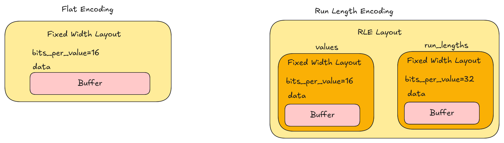
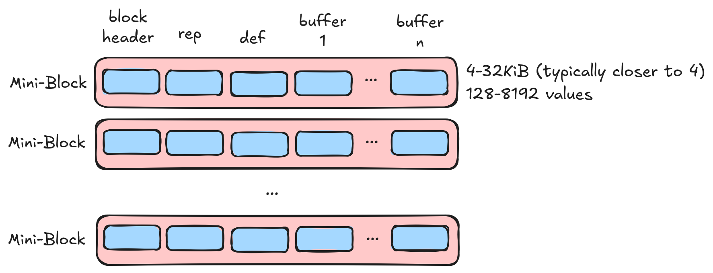
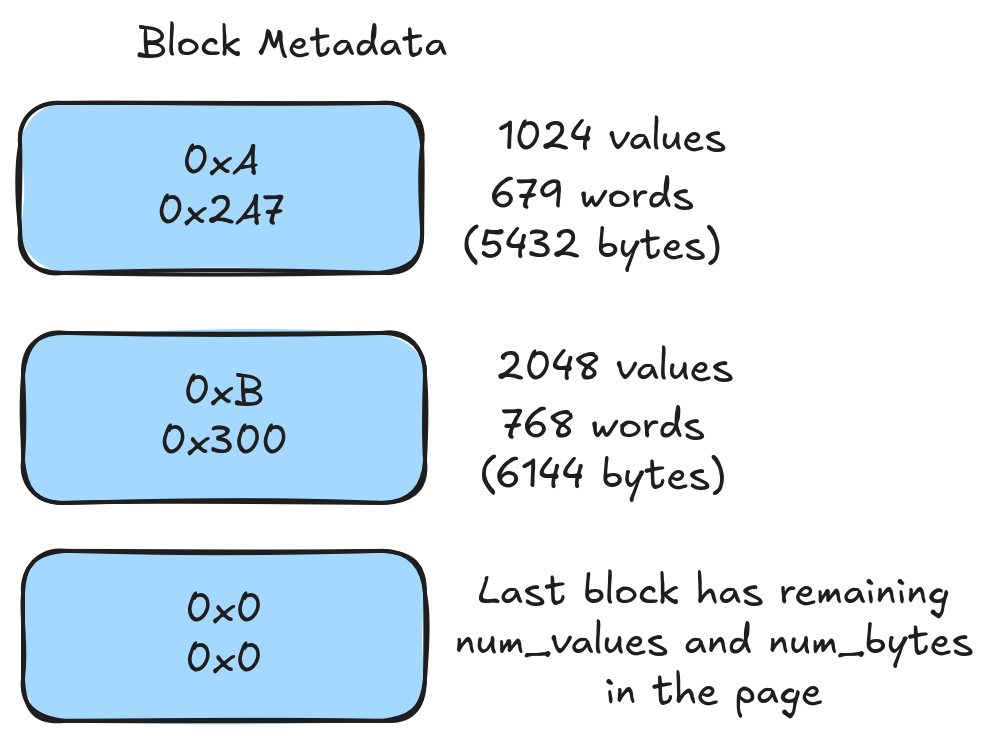
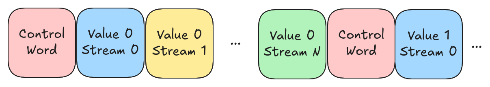
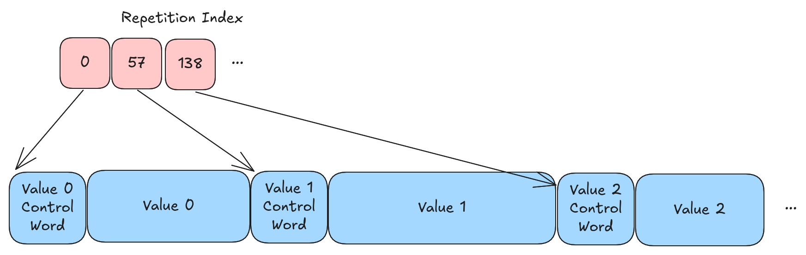

Lance Encoding Strategy¶
The encoding strategy determines how array data is encoded into a disk page. The encoding strategy tends to evolve more quickly than the file format itself.
Older Encoding Strategies¶
The 0.1 and 2.0 encoding strategies are no longer documented. They were significantly different from future encoding strategies and describing them in detail would be a distraction.
Terminology¶
An array is a sequence of values. An array has a data type which describes the semantic interpretation of the values. A layout is a way to encode an array into a set of buffers and child arrays. A buffer is a contiguous sequence of bytes. An encoding describes how the semantic interpretation of data is mapped to the layout. An encoder converts data from one layout to another.
Data types and layouts are orthogonal concepts. An integer array might be encoded into two completely different layouts which represent the same data.

Data Types¶
Lance uses a subset of Arrow's type system for data types. An Arrow data type is both a data type and an encoding. When writing data Lance will often normalize Arrow data types. For example, a string array and a large string array might end up traveling down the same path (variable width data). In fact, most types fall into two general paths. One for fixed-width data and one for variable-width data (where we recognize both 32-bit and 64-bit offsets).
At read time, the Arrow data type is used to determine the target encoding. For example, a string array and large string array might both be stored in the same layout but, at read time, we will use the Arrow data type to determine the size of the offsets returned to the user. There is no requirement the output Arrow type matches the input Arrow type. For example, it is acceptable to write an array as "large string" and then read it back as "string".
Search Cache¶
The search cache is a key component of the Lance file reader. Random access requires that we locate the physical location of the data in the file. To do so we need to know information such as the encoding used for a column, the location of the page, and potentially other information. This information is collectively known as the "search cache" and is implemented as a basic LRU cache. We define a "initialization phase" which is when we load the various indexing information into the search cache. The cost of initialization is assumed to be amortized over the lifetime of the reader.
When performing full scans (i.e. not random access), we should be able to ignore the search cache and sometimes can avoid loading it entirely. We do want to optimize for cold scans as the initialization phase is often not amortized over the lifetime of the reader.
Structural Encoding¶
The first step in encoding an array is to determine the structural encoding of the array. A structural encoding breaks the data into smaller units which can be independently decoded. Structural encodings are also responsible for encoding the "structure" (struct validity, list validity, list offsets, etc.) typically utilizing repetition levels and definition levels.
Structural encoding is fairly complicated! However, the goal is to suck out all the details related to I/O scheduling so that compression libraries can focus on compression. This keeps our compression traits simple without sacrificing our ability to perform random access.
Lance 2.1 and 2.2 describe structural encodings with lance.encodings21.PageLayout.
Their protobuf schema contains only stable layouts and codecs.
Sparse planes, Range, and MonotonicDelta belong to 2.3.
Lance 2.3 uses the independent planes described in Planar Page Layout.
message PageLayout {
oneof layout {
// A layout used for pages where the data is small
MiniBlockLayout mini_block_layout = 1;
// A layout used for pages where all (visible) values are the same scalar value or null.
ConstantLayout constant_layout = 2;
// A layout used for pages where the data is large
FullZipLayout full_zip_layout = 3;
/* A layout where large binary data is encoded externally
* and only the descriptions are put in the page
*/
BlobLayout blob_layout = 4;
}
}
Repetition and Definition Levels¶
Repetition and definition levels are an alternative to validity bitmaps and offset arrays for expressing struct and list information. They have a significant advantage in that they combine all of these buffers into a single buffer which allows us to avoid multiple IOPS.
A more extensive explanation of repetition and definition levels can be found in the code. One particular note is that we use 0 to represent the "inner-most" item and Parquet uses 0 to represent the "outer-most" item. Here is an example:
Definition Levels¶
Consider the following array:
In Arrow we would have the following validity arrays:
Outer validity : 1, 0, 1, 1
Middle validity: 1, ?, 0, 1
Inner validity : 1, ?, ?, 0
Values : 1, ?, ?, ?
The ? values are undefined in the Arrow format. We can convert these into definition levels as follows:
| Values | Definition | Notes |
|---|---|---|
| 1 | 0 | Valid at all levels |
| ? | 3 | Null at outer level |
| ? | 2 | Null at middle level |
| ? | 1 | Null at inner level |
Repetition Levels¶
Consider the following list array with 3 rows
We would have three offsets arrays in Arrow:
Outer-most ([]): [0, 3, 3, 4]
Middle ({}): [0, 3, 4, 4, 5]
Inner (<>): [0, 2, 2, 3, 4, 5]
Values : [0, 1, 2, 3, 4]
We can convert these into repetition levels as follows:
| Values | Repetition | Notes |
|---|---|---|
| 0 | 3 | Start of outer-most list |
| 1 | 0 | Continues inner-most list (no new lists) |
| ? | 1 | Start of new inner-most list (empty list) |
| 2 | 1 | Start of new inner-most list |
| 3 | 2 | Start of new middle list |
| ? | 2 | Start of new inner-most list (empty list) |
| ? | 3 | Start of new outer-most list (empty list) |
| 4 | 3 | Start of new outer-most list |
Mini Block Page Layout¶
The mini block page layout is the default layout for smallish types. This fits most of the classical data types (integers, floats, booleans, small strings, etc.) that Parquet and related formats already handle well. As is no surprise, the approach used is pretty similar to those formats.

The data is divided into small mini-blocks. Each mini-block should contain a power-of-two number of values (except for the last mini-block) and should be less than 32KiB of compressed data. We have to read an entire mini-block to get a single value so we want to keep the mini-block size small. Mini blocks are padded to 8 byte boundaries. This helps to avoid alignment issues. Each mini-block starts with a small header which helps us figure out how much padding has been applied.
The repetition and definition levels are sliced up and stored in the mini-blocks along with the compressed buffers. Since we need to read an entire mini-block there is no need to zip up the various buffers and they are stored one after the other (repetition, definition, values, ...).
Buffer 1 (Mini Blocks)¶
| Bytes | Meaning |
|---|---|
| 1 | Number of buffers in the mini-block |
| 2 | Size of buffer 0 |
| 2 | Size of buffer 1 |
| ... | ... |
| 2 | Size of buffer N |
| 0-7 | Padding to ensure 8 byte alignment |
| * | Buffer 0 |
| 0-7 | Padding to ensure 8 byte alignment |
| * | Buffer 1 |
| ... | ... |
| 0-7 | Padding to ensure 8 byte alignment |
| * | Buffer N |
| 0-7 | Padding to ensure 8 byte alignment |
Note: It is natural to explain this buffer first but it is actually the second buffer in the page.
Buffer 0 (Mini Block Metadata)¶

To enable random access we have a small metadata lookup which contains two bytes per mini-block. This lookup tells us how many bytes are in each mini block and how many items are in the mini block. This metadata lookup must be loaded at initialization time and placed in the search cache.
| Bits (not bytes) | Meaning |
|---|---|
| 12 | Number of 8-byte words in block 0 |
| 4 | Log2 of number of values in block 0 |
| 12 | Number of 8-byte words in block 1 |
| 4 | Log2 of number of values in block 1 |
| ... | ... |
| 12 | Number of 8-byte words in block N |
| 4 | Log2 of number of values in block N |
For all chunks except the last, the lower 4 bits store log2(num_values) and num_values must be a power of two.
For the last chunk, these bits are set to 0. The protobuf stores the total number of values in the page, so readers
can derive the final chunk size by subtracting the values from earlier chunks.
Buffer 2 (Dictionary, optional)¶
Dictionary encoding is an encoding that can be applied at many different levels throughout a file. For example, it could be used as a compressive encoding or it could even be entirely external to the file. We've found the most convenient simple place to apply dictionary encoding is at the structural level. Since dictionary indices are small we always use the mini block layout for dictionary encoding. When we use dictionary encoding we store the dictionary in the buffer at index 2. We require the dictionary to be full loaded and decoded at initialization time. This means we don't have to load the dictionary during random access but it does require the dictionary be placed in the search cache.
Dictionary values are stored as a single buffer and compressed through the block compression path. The compression
scheme for dictionary values can be configured separately (see lance-encoding:dict-values-compression below).
Buffer 2 (or 3) (Repetition Index, optional)¶
If there is repetition (list levels) then we need some way to translate row offsets into item offsets. The mini blocks always store items. During a full scan the list offsets are restored when we decode the repetition levels. However, to support random access, we don't have the repetition levels available. Instead we store a repetition index in the next available buffer (index 2 or 3 depending on whether the dictionary is present).
The repetition index is a flat buffer of u64 values. We have N * D values where N is the number of mini blocks and D Is the desired depth of random access plus one. For example, to support 1-dimensional lookups (random access by rows) then D is 2. To support two-dimensional lookups (e.g. rows[50][17]) then we could set D to 3.
Currently we only support 1-dimensional random access. Currently we do not compress the repetition index.
This may change in future versions.
| Bytes | Meaning |
|---|---|
| 8 | Number of rows in block 0 |
| 8 | Number of partial items in block 0 |
| 8 | Number of rows in block 1 |
| 8 | Number of partial items in block 1 |
| ... | ... |
| 8 | Number of rows in block N |
| 8 | Number of partial items in block N |
The last 8 bytes of each block stores the number of "partial" items. These are items leftover after the last complete row. We don't require rows to be bounded by mini-blocks so we need to keep track of this. For example, if we have 10,000 items per row then we might have several mini-blocks with only partial items and 0 rows.
At read time we can use this repetition index to translate row offsets into item offsets.
Mini Block Compression¶
The mini block layout relies on the compression algorithm to handle the splitting of data into mini-blocks. This is because the number of values per block will depend on the compressibility of the data. As a result, there is a special trait for mini block compression.
The data compression algorithm is the algorithm that decides chunk boundaries. The repetition and definition levels are then sliced appropriately and sent to a block compressor. This means there are no constraints on how the repetition and definition levels are compressed.
Beyond splitting the data into mini-blocks, there are no additional constraints. We expect to fully decode mini blocks as opaque chunks. This means we can use any compression algorithm that we deem suitable.
Protobuf¶
message MiniBlockLayout {
/* Description of the compression of repetition levels (e.g. how many bits per rep)
*
* Optional, if there is no repetition then this field is not present
*/
CompressiveEncoding rep_compression = 1;
/* Description of the compression of definition levels (e.g. how many bits per def)
*
* Optional, if there is no definition then this field is not present
*/
CompressiveEncoding def_compression = 2;
// Description of the compression of values
CompressiveEncoding value_compression = 3;
/* Description of the compression of the dictionary data
*
* Optional, if there is no dictionary then this field is not present
*/
CompressiveEncoding dictionary = 4;
// Number of items in the dictionary
uint64 num_dictionary_items = 5;
// The meaning of each repdef layer, used to interpret repdef buffers correctly
repeated RepDefLayer layers = 6;
/* The number of buffers in each mini-block, this is determined by the compression and does
* NOT include the repetition or definition buffers (the presence of these buffers can be determined
* by looking at the rep_compression and def_compression fields)
*/
uint64 num_buffers = 7;
/* The depth of the repetition index.
*
* If there is repetition then the depth must be at least 1. If there are many layers
* of repetition then deeper repetition indices will support deeper nested random access. For
* example, given 5 layers of repetition then the repetition index depth must be at least
* 3 to support access like `rows[50][17][3]`.
*
* We require `repetition_index_depth + 1` u64 values per mini-block to store the repetition
* index if the `repetition_index_depth` is greater than 0. The +1 is because we need to store
* the number of "leftover items" at the end of the chunk. Otherwise, we wouldn't have any way
* to know if the final item in a chunk is valid or not.
*/
uint32 repetition_index_depth = 8;
/* The page already records how many rows are in the page. For mini-block we also need to know how
* many "items" are in the page. A row and an item are the same thing unless the page has lists.
*/
uint64 num_items = 9;
// Since Lance 2.2, miniblocks have larger chunk sizes (>= 64KB)
bool has_large_chunk = 10;
}
The protobuf for the mini block layout describes the compression of the various buffers. It also tells us some information about the dictionary (if present) and the repetition index (if present).
Full Zip Page Layout¶
The full zip page layout is a layout for larger values (e.g. vector embeddings) which are large but not so large that we can justify a single IOP per value. In this case we are trying to avoid storing a large amount of "chunk overhead" (both in terms of buffer space and the RAM space in the search cache that we would need to store the repetition index). As a tradeoff, we are introducing a second IOP per-range for random access reads (unless the data is fixed-width such as vector embeddings).
We currently use 256 bytes as the cutoff for the full zip layout. At this point we would only be fitting 16 values in a 4KiB disk sector and so creating a mini-block descriptor for every 16 values would be too much overhead.
As a further consequence, we must ensure that the compression algorithm is "transparent" so that we can index individual values after compression has been applied. This prevents us from using compression algorithms such as delta encoding. If we want to apply general compression we have to apply them on a per-value basis. The way we enforce this is by requiring the compression to return either a flat fixed-width or variable-width layout so that we know the location of each element.
The repetition and definition levels, along with all compressed buffers, are all zipped together into a single buffer.
Data Buffer (Buffer 0)¶

The data buffer is a single buffer that contains the repetition, definition, and value data, all zipped into a single buffer. The repetition and definition information are combined and byte packed. This is referred to as a control word. If the value is null or an empty list, then the control word is all that is serialized. If there is no validity or repetition information then control words are not serialized. If the value is variable-width then we encode the size of the value. This is either a 4-byte or 8-byte integer depending on the width used in the offsets returned by the compression (in future versions this will likely be encoded with some kind of variable-width integer encoding). Finally the value buffers themselves are appended.
| Bytes | Meaning |
|---|---|
| 0-4 | Control word 0 |
| 0/4/8 | Value 0 size |
| * | Value 0 data |
| ... | ... |
| 0-4 | Control word N |
| 0/4/8 | Value N size |
| * | Value N data |
Note: a fixed-width data type that has no validity information (e.g. non-nullable vector embeddings) is simply a flat buffer of data.
Repetition Index (Buffer 1)¶

If there is repetition information or the values are variable width then we need additional help to locate values in the disk page. The repetition index is an array of u64 values. There is one value per row and the value is an offset to the start of that row in the data buffer. To perform random access we require two IOPS. First we issue an IOP into the repetition index to determine the location and then a second IOP into the data buffer to load the data. Alternatively, the entire repetition index can be loaded into memory in the initialization phase though this can lead to high RAM usage by the search cache.
The repetition index must have a fixed width (or else we would need a repetition index to read the repetition index!) and be transparent. As a result the compression options are limited. That being said, there is little value (in terms of performance) in compressing the repetition index. It is never read in its entirety as it is not needed for full scans. Currently the repetition index is always compressed with simple (non-chunked) byte packing into 1,2,4, or 8 byte values.
Protobuf¶
message FullZipLayout {
// The number of bits of repetition info (0 if there is no repetition)
uint32 bits_rep = 1;
// The number of bits of definition info (0 if there is no definition)
uint32 bits_def = 2;
/* The number of bits of value info
*
* Note: we use bits here (and not bytes) for consistency with other encodings. However, in practice,
* there is never a reason to use a bits per value that is not a multiple of 8. The complexity is not
* worth the small savings in space since this encoding is typically used with large values already.
*/
oneof details {
// If this is a fixed width block then we need to have a fixed number of bits per value
uint32 bits_per_value = 3;
// If this is a variable width block then we need to have a fixed number of bits per offset
uint32 bits_per_offset = 4;
}
// The number of items in the page
uint32 num_items = 5;
// The number of visible items in the page
uint32 num_visible_items = 6;
// Description of the compression of values
CompressiveEncoding value_compression = 7;
// The meaning of each repdef layer, used to interpret repdef buffers correctly
repeated RepDefLayer layers = 8;
}
The protobuf for the full zip layout describes the compression of the data buffer. It also tells us the size of the control words and how many bits we have per value (for fixed-width data) or how many bits we have per offset (for variable-width data).
Planar Page Layout¶
The unstable Lance 2.3 format uses lance.encodings23.PlanarLayout as every primitive page's
encoding description. Both the structure and value planes are required. Earlier unstable 2.3 metadata
is not supported. Lance 2.0, 2.1, and 2.2 retain their original metadata and physical grammars.
encodings_v2_3.proto defines the complete 2.3 metadata grammar, including the recursive
lance.encodings23.CompressiveEncoding tree and repetition/definition layer interpretations.
It does not import the stable encodings_v2_1.proto. Range, MonotonicDelta, generic variable-width
offsets, and generic unsigned sequence compositions belong to 2.3. The stable lance.encodings21 package
contains only the 2.1/2.2 grammar; matching codec names across packages do not imply that their
allowed compositions are interchangeable.
PlanarLayout
+-- structure
| +-- Dense: repetition/definition layer interpretations
| +-- Sparse: outer-to-inner slot-domain mappings
+-- values
+-- Chunked: independently compressed mini-blocks, optional dictionary
+-- Zipped: individually addressable fixed- or variable-width values
+-- Indexed: sparse slot indices into individually addressable dictionary items
+-- Constant: one inline non-null scalar
+-- None: no materialized leaf values
| Structure | Chunked | Zipped | Indexed | Constant | None |
|---|---|---|---|---|---|
| Dense | Dense levels alongside values | Control words alongside values | Not supported | Trivial all-valid layers only | Single null leaf only |
| Sparse | All terminal slots, including null slots | Only materialized leaf values | All terminal slot indices; addressed dictionary items | Scalar at materialized leaf positions | No materialized values, or an empty-struct leaf |
Dense layers run from inner-most to outer-most. Dense chunked and zipped values retain the existing
u32 mini-block and full-zip physical grammars. Their dense level metadata lives in DenseChunkLevels
or DenseZipLevels; these messages must be absent with sparse structure. Compression descriptors,
including generic variable-width offsets, follow the 2.3 compression grammar.
A materialized leaf position is valid in every ancestor layer and in the terminal validity layer. Null structs and fixed-size lists exclude all their child positions. Readers derive this set from structure, without an additional stored leaf-position map. Sparse zipped values follow these positions in increasing order. A null-only selection requires no value I/O after structural initialization.
Indexed values require sparse structure and a binary or string leaf. The first buffer contains one encoded unsigned 32-bit index for every terminal slot, including null slots. The remaining two buffers contain zipped dictionary items and their byte-offset table. Every index is less than the item count. Indices use the typed unsigned sequence grammar; metadata-only encodings have an empty first buffer. Items have no dense controls, and item count equals visible item count. Readers initialize indices and item offsets, validate their domains, then fetch only dictionary items referenced by the selected slots. Repeated indices may share one item read. Null semantics remain entirely structural.
Constant stores exactly one non-null fixed-width scalar, between 1 and 32 bytes, whose width matches the leaf type. Boolean uses one byte. It excludes nested values and variable-width scalars. Constant and None have no value buffers; sparse structural buffers may still be required.
Blob v1 binary pages are not part of the 2.3 grammar. Blob v2 descriptor structs use ordinary planar pages for their descriptor fields; external blob storage and lifecycle remain unchanged.
Writers choose the two planes independently. The current writer uses sparse structure for an explicit
sparse request with nontrivial structure, dense structural-budget overflow, complex constants,
structural-only pages, and mostly-null wide values. Trivial all-valid pages remain dense. Narrow
sparse values use chunked storage; wide values use zipped storage. Dictionary and variable-width
packed structs can compose with sparse structure. Codec selection is a writer policy, not a reader restriction.
message DenseStructure {
// Inner-most to outer-most interpretation of dense repetition/definition levels.
repeated RepDefLayer layers = 1;
}
message ValuePlane {
oneof codec {
ChunkedValues chunked = 1;
ZippedValues zipped = 2;
ConstantValue constant = 3;
NoValues none = 4;
IndexedValues indexed = 5;
}
}
message ChunkedValues {
CompressiveEncoding compression = 1;
/* Present only with dense structure. Sparse chunks have a zero level count
* and contain only independently compressed value buffers.
*/
DenseChunkLevels levels = 2;
// Optional dictionary shared by the value chunks.
CompressiveEncoding dictionary = 3;
uint64 num_dictionary_items = 4;
// Number of value buffers per chunk, excluding repetition and definition.
uint64 num_buffers = 5;
// Dense structural event count. Sparse counts are derived from its domains.
uint64 num_items = 6;
}
message DenseChunkLevels {
// Absent when the page has no repetition stream.
CompressiveEncoding repetition = 1;
// Absent when the page has no definition stream.
CompressiveEncoding definition = 2;
uint32 repetition_index_depth = 3;
}
message ZippedValues {
CompressiveEncoding compression = 1;
// Present only with dense structure; sparse values contain no control words.
DenseZipLevels levels = 2;
oneof addressing {
uint32 bits_per_value = 3;
uint32 bits_per_offset = 4;
}
// Dense event count or sparse materialized value count.
uint64 num_items = 5;
// Leaf slots for dense pages; equal to num_items for sparse pages.
uint64 num_visible_items = 6;
}
message ConstantValue {
// Exactly one non-null fixed-width scalar, at most 32 bytes. Boolean uses one byte.
bytes scalar = 1;
}
Sparse Structural Domains¶
A domain is a layer-local coordinate space [0, size). Layers are ordered from outer-most to inner-most:
- validity preserves the domain and identifies null slots
- list maps non-empty parent slots to variable-size child ranges
- fixed-size-list maps each parent slot to
dimensionchildren
The outer domain contains logical page rows. To obtain its size, divide the page metadata's row count by the product of all fixed-size-list layer dimensions, including dimensions below variable-size lists. Dimensions must be positive, the product must not overflow, and the division must be exact. With no fixed-size-list layers the product is one.
Each layer's parent size is the preceding child size. Validity preserves that size; fixed-size-list multiplies it by
dimension; list supplies num_child_slots, which must equal the sum of its counts. Keeping this list summary permits
downstream domains to be determined without reading structural payloads. The terminal domain is the leaf slot count,
including null leaf slots. The layer list may be empty for a flat, non-nullable page.
A valid list slot absent from non_empty_positions is an empty list. Null list slots have no children.
Maps use the same structural contract as lists.
Structural Sequences¶
Positions and list counts are generic unsigned blocks with inline CompressiveEncoding
descriptors and unsigned 64-bit values. Positions are absolute, strictly increasing, and below their parent-domain
size. Counts are positive child counts in non-empty-position order. Sparse applies no additional transform.
SparseValiditySet.num_positions supplies the validity sequence cardinality.
SparseListLayer.num_non_empty_positions supplies both the non-empty position and count sequence cardinalities.
Descriptors are required even for empty sequences; encoding and payload rules follow the generic block contract.
Every layer has validity with one of two meanings:
SPARSE_VALIDITY_NULL_POSITIONS: stored positions are null; all other positions are validSPARSE_VALIDITY_VALID_POSITIONS: stored positions are valid; all other positions are null
The unspecified meaning is invalid. Non-empty list positions must be valid.
Sparse Buffers¶
Value buffers precede structural buffers:
- Chunked uses the shared u32 mini-block grammar: chunk metadata, chunk data, then an optional dictionary.
Chunk metadata uses the same packed size/count words as dense mini-blocks. The value count equals
the terminal slot domain. There are no repetition/definition streams or repetition index.
num_buffersdescribes the value codec's buffers per chunk;num_itemsis zero because structure determines the count. The optional dictionary is shared by all value chunks. - Fixed-width zipped uses one value buffer. Each materialized value occupies
bits_per_value / 8bytes. The buffer length must equal that width timesnum_items. - Variable-width zipped uses the full-zip value buffer and byte index. There are no control words;
each value retains the full-zip length prefix. The index contains
num_items + 1absolute byte offsets, using the width derived from the index buffer's length. Both zipped counts equal the number of materialized leaf positions. - Constant and None use no value buffers.
Remaining buffers contain zero or one payload per generic structural sequence. Sequences are visited in outer-to-inner layer order. Within a list layer the order is non-empty positions, counts, then validity positions. Validity and fixed-size-list layers contain only their validity sequence. Each sequence consumes the payload count specified by its generic codec; missing or extra buffers are invalid.
The structural domains map row selections to terminal leaf ranges. Chunked reads fetch only intersecting mini-blocks. Zipped reads map selected materialized leaf positions to byte ranges. Empty terminal selections require no value payload. Cache placement is an implementation choice.
Validation¶
Readers reject missing planes and layer variants, invalid scalar widths, inconsistent codec/buffer counts, overflowing buffer ranges and domain arithmetic, invalid validity meanings, unordered or out-of-bounds positions, and list counts that disagree with their child domain. Zipped value counts must agree with the materialized positions. None requires no materialized positions, except for an empty-struct leaf. Structural payload validation follows the generic unsigned block contract; chunked and zipped values follow their shared value grammars.
message SparseStructure {
// Outer-most to inner-most slot-domain mappings.
repeated SparseStructuralLayer layers = 1;
}
message SparseStructuralLayer {
// Exactly one layer kind is required.
oneof layer {
SparseValiditySet validity = 1;
SparseListLayer list = 2;
SparseFixedSizeListLayer fixed_size_list = 3;
}
}
message SparseListLayer {
// Child-domain size, equal to the sum of counts; available before reading count payloads.
uint64 num_child_slots = 1;
// Non-empty parent slots. Valid parent slots absent from this set are empty lists.
CompressiveEncoding non_empty_positions = 2;
// Cardinality of both non_empty_positions and counts.
uint64 num_non_empty_positions = 3;
// Positive child counts corresponding one-for-one with non_empty_positions.
CompressiveEncoding counts = 4;
// Validity for the parent slots in this layer.
SparseValiditySet validity = 5;
}
message SparseFixedSizeListLayer {
// Positive number of children per parent slot. The child-domain size is parent size * dimension.
uint64 dimension = 1;
// Validity for the parent slots in this layer.
SparseValiditySet validity = 2;
}
message SparseValiditySet {
enum Meaning {
SPARSE_VALIDITY_UNSPECIFIED = 0;
// Stored positions are null; all other positions are valid.
SPARSE_VALIDITY_NULL_POSITIONS = 1;
// Stored positions are valid; all other positions are null.
SPARSE_VALIDITY_VALID_POSITIONS = 2;
}
Meaning meaning = 1;
/* Required unsigned u64 block encoding of strictly increasing absolute positions.
* The cardinality is num_positions. All values must be below the owning domain's
* derived size. This descriptor is required even when the sequence is empty.
*
* Positions and list counts follow the generic unsigned block contract,
* including empty sequences and payload framing. Counts need not be increasing.
*/
CompressiveEncoding positions = 2;
// Semantic cardinality of the stored positions.
uint64 num_positions = 3;
}
Constant Page Layout¶
This layout is used when all (visible) values in the page are the same scalar value.
The all-null case is represented by a constant page without an inline scalar value. Surprisingly, this does not mean there is no data. If there are any levels of struct or list then we need to store the rep/def levels so that we can distinguish between null structs, null lists, empty lists, and null values.
Repetition and Definition Levels (Buffers 0 and 1)¶
Note: We currently store rep levels in the first buffer with a flat layout of 16-bit values and def levels in the second buffer with a flat layout of 16-bit values. This will likely change in future versions.
Protobuf¶
message ConstantLayout {
// The meaning of each repdef layer, used to interpret repdef buffers correctly
repeated RepDefLayer layers = 5;
/* Inline fixed-width scalar value bytes.
*
* This MUST only be used for types where a single non-null element is represented by a single
* fixed-width Arrow value buffer (i.e. no offsets buffer, no child data).
*
* Constraints:
* - MUST be absent for an all-null page
* - MUST be <= 32 bytes if present
*/
optional bytes inline_value = 6;
/* Optional compression algorithm used for the repetition buffer.
* If absent, repetition levels are stored as raw u16 values.
*/
CompressiveEncoding rep_compression = 7;
/* Optional compression algorithm used for the definition buffer.
* If absent, definition levels are stored as raw u16 values.
*/
CompressiveEncoding def_compression = 8;
// Number of values in repetition buffer after decompression.
uint64 num_rep_values = 9;
// Number of values in definition buffer after decompression.
uint64 num_def_values = 10;
}
All we need to know is the meaning of each rep/def level and (when present) the inline scalar value bytes.
Blob Page Layout¶
This section describes the earlier two-field blob layout. Blob v2 uses a five-field packed struct descriptor; see the Blob v2 Specification for its schema, null semantics, and payload storage rules.
The blob page layout is a layout for large binary values where we would only have a few values per disk page.
The actual data is stored out-of-line in external buffers. The disk page stores a "description" which is a
struct array of two fields: position and size. The position is the absolute file offset of the blob and
the size is the size (in bytes) of the blob. The inner page layout describes how the descriptions are encoded.
The validity information (definition levels) is smuggled into the descriptions. If the size and position are both zero then the value is empty. Otherwise, if the size is zero and the position is non-zero then the value is null and the position is the definition level.
This layout is only recommended when you can justify a single IOP per value. For example, when values are 1MiB or larger.
This layout has no buffers of its own and merely wraps an inner layout.
Protobuf¶
message BlobLayout {
// The inner layout used to store the descriptions
PageLayout inner_layout = 1;
/* The meaning of each repdef layer, used to interpret repdef buffers correctly
*
* The inner layout's repdef layers will always be 1 all valid item layer
*/
repeated RepDefLayer layers = 2;
}
Since we smuggle the validity into the descriptions we don't need to store it in the inner layout and so the rep/def meaning is stored in the blob layout and the rep/def meaning in the inner layout will be 1 all valid item layer.
Semi-Structural Transformations¶
There are some data transformations that are applied to the data before (or during) the structural encoding process. These are described here.
Dictionary Encoding¶
Dictionary encoding is a technique that can be applied to any kind of array. It is useful when there are not very many unique values in the array. First, a "dictionary" of unique values is created. Then we create a second array of indices into the dictionary.
Dictionary encoding is also known as "categorical encoding" in other contexts.
Dictionary encoding could be treated as simply another compression technique but, when applied, it would be an opaque compression technique which would limit its usability (e.g. in a full zip context). As a result, we apply it before any structural encoding takes place. This allows us to place the dictionary in the search cache for random access.
Struct Packing¶
Struct packing is an alternative representation to apply to struct values. Instead of storing that struct in a columnar fashion it will be stored in a row-major fashion. This will reduce the number of IOPS needed for random access but will prevent the ability to read a single field at a time. This is useful when all fields in the struct are always accessed together.
Packed struct is always opt-in (see section on configuration below).
In Lance 2.1, packed struct is limited to fixed-width children (PackedStruct).
Starting with Lance 2.2, variable-width children are also supported via VariablePackedStruct.
Fixed Size List¶
Fixed size lists are an Arrow data type that needs specialized handling at the structural level. If the underlying data type is primitive then the fixed size list will be primitive (e.g. a tensor). If the underlying data type is structural (struct/list) then the fixed size list is structural and should be treated the same as a variable-size list.
We don't want compression libraries to need to worry about the intricacies of fixed-size lists. As a result we flatten the list as part of structural encoding. This complicates random access as we must translate between rows (an entire fixed size list) and items (a single item in the list).
If the items in a fixed size list are nullable then we do not treat that validity array as a repetition or definition level. Instead, we store the validity as a separate buffer. For example, when encoding nullable fixed size lists with mini-block encoding the validity buffer is another buffer in the mini-block. When encoding nullable fixed size lists with full-zip encoding the validity buffer is zipped together with the values.
The good news is that fixed size lists are entirely a structural encoding concern. Compression techniques are free to pretend that the fixed-size list data type does not exist.
Compression¶
Generic block compression (including Range, MonotonicDelta, block dictionary compositions and generic mini-block offsets) belongs to the unstable Lance 2.3 file format. It is not part of the stable 2.0, 2.1 or 2.2 contracts. The complete 2.3 format will undergo a consolidated format vote when it is proposed for stable status; intermediate unstable revisions do not establish compatibility requirements.
Once a structural encoding is chosen we must determine how to compress the data. There are various buffers that might be compressed (e.g. data, repetition, definition, dictionary, etc.). The available compression algorithms are also constrained by the structural encoding chosen. For example, when using the full zip layout we require transparent compression. As a result, each encoding technique may or may not be usable in a given scenario. In addition, the same technique may be applied in a different way depending on the encoding chosen.
In implementation terms we have a trait for each compression constraint. The techniques then implement the traits that they can be applied to. To start with, here is a summary of compression techniques which are implemented in at least one scenario and a list of which traits the technique implements. A ❓ is used to indicate that the technique should be usable in that context but we do not yet do so while a ❌ indicates that the technique is not usable because it is not transparent. Note, even though a technique is not transparent it can still be applied on a per-value basis. We use ☑️ to mark a technique that is applied on a per-value basis:
| Compression | Used in Block Context | Used in Full Zip Context | Used in Mini-Block Context |
|---|---|---|---|
| Flat | ✅ (2.1) | ✅ (2.1) | ✅ (2.1) |
| Variable | ✅ (2.1) | ✅ (2.1) | ✅ (2.1) |
| Constant | ✅ (2.1) | ❓ | ❓ |
| Range | ✅ (2.3) | ❌ | ❌ |
| MonotonicDelta | ✅ (2.3) | ❌ | ❌ |
| Dictionary | ✅ (2.3) | ❌ | ❌ |
| Bitpacking | ✅ (2.1) | ❓ | ✅ (2.1) |
| Fsst | ❓ | ✅ (2.1) | ✅ (2.1) |
| Rle | ✅ (2.2) | ❌ | ✅ (2.1) |
| ByteStreamSplit | ❓ | ❌ | ✅ (2.1) |
| ALP | ❓ | ❌ | ✅ (2.3) |
| Pcodec | ❓ | ❌ | ✅ (2.3) |
| AxisDelta | ❌ | ☑️ (2.3) | ❌ |
| General | ✅ (2.2) | ☑️ (2.1) | ✅ (2.1) |
In the following sections we will describe each technique in a bit more detail and explain how it is utilized in various contexts.
Flat¶
Flat compression is the uncompressed representation of fixed-width data. There is a single buffer of data with a fixed number of bits per value.
When applied in a mini-block context we find the largest power of 2 number of values that will be less than 8,186 bytes and use that as the block size.
In Lance 2.3 mini-block and generic unsigned block positions, Flat.data must be absent: leaf
BufferCompression is not supported. General compression uses a General wrapper at a permitted position.
Variable¶
Variable compression is the uncompressed representation of variable-width data. There is a buffer of values and a buffer of offsets.
In Lance 2.3 buffer-backed block positions and variable-width Zipped value positions, Variable.offsets must
be Flat with bits_per_value equal to 32 or 64 and Flat.data absent. Variable.values must also be absent.
The generic offset encodings described below are supported only in mini-block positions.
When applied in a mini-block context each block may have a different number of values. We walk through the values until we find the point that would exceed 4,096 bytes and then use the most recent power of 2 number of values that we have passed.
Lance 2.1 and 2.2 store each variable-width mini-block in the legacy interleaved form. Variable.offsets is a
plain Flat encoding, and each chunk has one buffer:
The first legacy offset points past the offset table to the first value byte. The chunk is padded to an 8-byte boundary.
Starting with Lance 2.3, a mini-block writer may instead encode the offsets as an independently decodable generic
block when that produces fewer complete serialized bytes, including the descriptor, chunk header, buffer entries
and padding.
Every chunk in the page uses the same offset codec. Its offset sequence contains num_values + 1 unsigned values,
starts at zero, is non-decreasing, and ends at the length of that chunk's value buffer.
The writer first chooses the same power-of-two chunk boundaries as the legacy layout. For each chunk it subtracts the first offset, then collects range, delta, run and bounded-cardinality statistics in one pass. It evaluates the permitted codecs over the complete family of chunks, including metadata and aligned payload costs, and selects one codec for the page. The writer serializes both the legacy and selected generic candidates and emits the generic candidate only when its complete serialized size is strictly smaller. A tie preserves the legacy bytes.
metadata-only offset codec payload-bearing offset codec
└── value buffer ├── offset payload buffer
└── value buffer
A non-Flat Variable.offsets descriptor identifies this generic form and follows the
generic unsigned block contract. Flat remains the legacy interleaved signal; writers
do not emit a separate generic Flat container.
Readers fetch and decode only the selected mini-block, so the additional logical buffer does not change random-read
granularity.
In Lance 2.3 mini-block positions, Variable.values must be absent in both the interleaved and generic forms.
Value bytes are stored without leaf BufferCompression; the offsets must follow the layout-specific contract above.
Generic Unsigned Blocks¶
A generic unsigned block has a CompressiveEncoding descriptor and zero or one payload buffer. Its container supplies
the unsigned width (u32 or u64) and cardinality. The codec alone determines transforms, scalar representation,
child grammar and payload framing; the container defines the meaning and constraints of the decoded values.
An empty sequence uses Constant with an absent scalar and no payload. Non-empty Constant stores one little-endian
scalar of the declared width. Range and other metadata-only expressions consume no payload, including
MonotonicDelta(Constant). Each payload-bearing root consumes exactly one buffer. RLE and dictionary roots frame
their children inside that buffer. These rules apply to both variable-width offsets and sparse structural sequences.
The generic fixed-width decoder accepts one composite root at most:
generic unsigned block root
├── leaf: Flat, Constant, Range, InlineBitpacking, OutOfLineBitpacking
├── MonotonicDelta(leaf)
├── General(Flat)
├── Rle(values=leaf, run_lengths=u32 leaf)
└── Dictionary(indices=u32 leaf, items=sequence-width leaf)
Range and MonotonicDelta require num_values >= 2; MonotonicDelta decodes num_values - 1 child values.
When either RLE child has a payload, the frame starts with the values payload length as an 8-byte
little-endian integer, followed by that many values payload bytes, then the run_lengths payload through
the end of the frame. A metadata-only child contributes zero payload bytes. If both children are metadata-only,
the entire frame, including its length prefix, is omitted.
RLE children have the same run cardinality, all run lengths are positive, and their checked sum equals num_values.
To recover that run cardinality, block RLE
requires either run_lengths encoded as Constant or Range, or at least one plain Flat child (values or
run_lengths, with no BufferCompression). Constant run lengths must divide num_values exactly; Range run lengths
must have a positive start and step and an integer run count whose arithmetic-series sum is num_values.
Otherwise, the run count is the plain child's payload byte length divided by its declared byte width. Two bitpacked
children are invalid because neither supplies the run count. A Range child in either position requires at least
two recovered runs.
Dictionary indices have num_values entries and every index is less than the declared dictionary item count.
General compression must decode exactly the byte length implied by the containing cardinality and sequence width.
Readers reject missing children, incompatible widths, unsupported nesting, wrong payload arity, malformed framing
and arithmetic overflow.
Constant¶
For generic unsigned blocks, Constant repeats one scalar for the container-supplied cardinality without a payload. The generic block contract also defines the empty-sequence representation. Other containers, such as all-null encodings, define their own Constant semantics.
Range¶
Range is a metadata-only block encoding for unsigned u32 and u64 arithmetic sequences of at least two values.
It stores the first value and a positive step; the containing block supplies the number of values. Readers compute
value i as start + step * i and reject invalid widths or arithmetic overflow.
/* A metadata-only arithmetic sequence for unstable Lance 2.3 only.
*
* The value at index i is `start + step * i`. The container supplies the
* number of values. Writers use this encoding only when step is positive and
* the final value fits in the declared bit width. The sequence must contain
* at least two values; empty and singleton sequences use Constant.
*
* The input is a u32 or u64 fixed-width data block.
* There is no output buffer.
*/
message Range {
// The width of each decompressed value. Must be 32 or 64.
uint64 uncompressed_bits_per_value = 1;
// The first value in the sequence.
uint64 start = 2;
// The positive difference between adjacent values.
uint64 step = 3;
}
MonotonicDelta¶
MonotonicDelta encodes a non-decreasing unsigned u32 or u64 sequence as its first value and the n - 1
adjacent differences, requiring at least two input values. A child block codec represents those differences.
MonotonicDelta has a payload exactly when its child has one. Readers reconstruct values with checked prefix sums.
message MonotonicDelta {
// The width of each decompressed value. Must be 32 or 64.
uint64 uncompressed_bits_per_value = 1;
// The first uncompressed value.
uint64 base = 2;
// Compression applied to the adjacent differences.
CompressiveEncoding deltas = 3;
}
Block Dictionary¶
A block dictionary represents unsigned u32 or u64 values with a u32 indices child and a dictionary-items
child. Both children are concrete block codecs. When either child has a payload, the outer payload is framed as:
A metadata-only child has a zero framed length. If both children are metadata-only, the dictionary itself has no payload. Readers validate the frame boundaries, child widths and cardinalities, and every dictionary index.
Bitpacking¶
Bitpacking is a compression technique that removes the unused bits from a set of values. For example, if we have a u32 array and the maximum value is 5000 then we only need 13 bits to store each value.
When used in a mini-block context we always use 1024 values per block. In addition, we store the compressed bit width inline in the block itself.
Lance 2.1 and later bitpack values whose uncompressed_bits_per_value is 8, 16, 32 or 64. Starting in 2.3,
InlineBitpacking and OutOfLineBitpacking also allow uncompressed_bits_per_value = 128, which writers use for
16-byte fixed-width values such as Decimal128. Readers of 2.1 and 2.2 files reject a bitpacking encoding whose
uncompressed_bits_per_value is greater than 64.
In Lance 2.3 mini-block positions, InlineBitpacking.uncompressed_bits_per_value must be 8, 16, 32, 64, or 128.
InlineBitpacking.values must be absent in mini-block and generic unsigned block positions.
Values are packed in blocks of 1024. Every value in a block is below 2^w, where w is the packed width. Values of
8, 16, 32 and 64 bits use the transposed layout below with k equal to the value width. A 128-bit value is treated
as an unsigned 128-bit integer, so a block that contains a negative Decimal128 value has w = 128. A 128-bit
block is 128 * w bytes, laid out by w:
w |
Layout of a 128-bit packed block |
|---|---|
| 0 | Empty. Every value is zero. |
| 1 to 64 | The low k bits of each value in the transposed layout, with k = 32 when w is at most 32 and k = 64 otherwise. |
| 65 to 127 | The low 64 bits of the 1024 values as little-endian 64-bit words in value order, not transposed, followed by the high w - 64 bits of each value in the transposed layout with k = 64 at width w - 64. |
| 128 | The 1024 values as little-endian 16-byte integers. |
The transposed layout packs 1024 k-bit values at width w (0 < w <= k) into w * 1024 / k little-endian k-bit
words. Let L = 1024 / k be the number of lanes. Lane l (from 0 to L - 1) owns words j * L + l for j from 0
to w - 1. Taken in that order, least significant bit first, those words form a bit stream in which row r (from 0
to k - 1) occupies bits r * w to (r + 1) * w - 1. Row r of lane l holds value
O[r / 8] * 16 + (r % 8) * 128 + l, where O = [0, 4, 2, 6, 1, 5, 3, 7]. When w = k the block is still this
permutation of the values, not a plain copy. A block with w = 0 is empty.
An InlineBitpacking buffer is a mini-block chunk, or a block of at most 1024 values. It is one word of the
uncompressed width holding w, little-endian, followed by one packed block; for 128-bit values the header is 16 bytes
and w is from 0 to 128. Each chunk has its own w. A buffer of fewer than 1024 values is zero-padded to 1024 before
packing, and readers keep the leading values. A buffer that holds no values (num_values = 0) is 0 bytes, with no
header, and readers return no values without reading it. InlineBitpacking.values must be absent. Readers reject a
header above the uncompressed width and a packed block of any other length. Lance writers set w to the uncompressed
width minus the leading zero bits of the bitwise OR of the chunk's values.
An OutOfLineBitpacking payload of n values packs every block at one width: w is the bits_per_value of its
values encoding, which must be Flat with no buffer compression. w is from 0 to the uncompressed width, which is
0 to 128 for 128-bit values. Inside a generic unsigned block, which only holds u32 or
u64 values, w is from 1 to the uncompressed width minus 1. The payload is n / 1024 (rounded down) packed blocks
back to back with no headers, followed by the remaining t values, if any. The tail is either zero-padded to 1024
values and packed, or stored as t raw little-endian values. Lance writers pack the tail only when the packed block
is smaller than the raw values; for 128-bit values that is 128 * w < 16 * t. Readers pick the tail layout from the
payload length, treat the tail as raw when both lengths are equal, and reject any other length.
Bitpacking is, in theory, usable in a full zip context. However, values in this context are so large that shaving off a few bits is unlikely to have any meaningful impact. Also, the full-zip context keeps things byte-aligned and so we would have to remove at least 8 bits per value.
Fsst¶
Fsst is a fast and transparent compression algorithm for variable-width data. It is the primary compression algorithm that we apply to variable-width data.
Currently we use a single FSST symbol table per disk page and store that symbol table in the protobuf description. This is for historical reasons and is not ideal and will likely change in future versions.
When FSST is applied in a mini-block context we simply compress the data and let the underlying compressor (always
Variable at the moment) handle the chunking.
Run Length Encoding (RLE)¶
Run length encoding is a compression technique that compresses large runs of identical values into an array of values and an array of run lengths. This is currently used in the mini-block context. To determine if we should apply run-length encoding we look at the number of runs divided by the number of values. If the ratio is below a threshold (by default 0.5) then we apply run-length encoding.
Byte Stream Split (BSS)¶
Byte stream split is a compression technique that splits multi-byte values by byte position, creating separate streams for each byte position across all values. This is a rudimentary and simple form of translating floating point values into a more compressible format because it tends to cluster the mantissa bits together which are often consistent across a column of floating point values. It does not actually make the data smaller by itself. As a result, BSS is only applied if general compression is also applied on the column.
We currently determine whether or not to apply BSS by looking at an entropy statistics. There is a configurable sensitivity parameter. A sensitivity of 0.0 means never apply BSS and a sensitivity of 1.0 means always apply BSS.
ALP¶
ALP (Adaptive Lossless floating-Point) losslessly compresses IEEE-754 f32 and f64 mini-block values in the
unstable Lance 2.3 format. The Alp message declares the value width, 32 or 64 bits. Each chunk stores its
own reconstruction parameters.
ALP Chunk Framing¶
An ALP chunk has four value buffers, so ChunkedValues.num_buffers is 4. Their lengths use the u32 mini-block
framing of the planar page layout. The outer chunk header starts with a little-endian u16
level count, followed by a little-endian u16 byte length for each present repetition and definition stream in
that order, then four little-endian u32 value buffer lengths. The buffers follow in the same order. Sparse
chunks write zero for the level count, then the four value lengths. The writer aligns the end of the outer
header and of each buffer to 8 bytes using 0xFE. The declared lengths exclude that alignment padding. Empty
value buffers still have a length entry. When General wraps Alp, decompress value buffer 0 with the declared
general codec before interpreting its ALP contents.
Each little-endian u32 in the mini-block metadata describes a chunk of 8 * ((word >> 4) + 1) bytes including
alignment. For a non-final chunk of n values, the low four bits store log2(n) and must be nonzero. The final
chunk gets its count from the page total minus the preceding chunk counts. If its low four bits are nonzero,
they must agree with that count. The page total comes from ChunkedValues.num_items for dense pages and the
terminal slot domain for sparse pages. The writer emits 1024 values per chunk, with a shorter final chunk
if needed. It writes 10 for a full chunk and 0 for the shorter final chunk.
The reader rejects a mismatched declared buffer count, truncated outer chunk headers, and buffers that extend past the chunk boundary. The chunk lengths must sum to the size of the page's chunk data buffer. A zero-value call to the ALP codec returns an empty result before inspecting its value buffers.
The first byte of value buffer 1 is the control byte. Exactly 0x04 selects ALP-RD, which requires f64.
All other bytes select decimal ALP. For decimal ALP, bit 0 selects Delta when set and Frame-of-Reference
(FOR) when clear. Bit 1 selects divide when set and multiply when clear. The writer clears bits 2 through 7 in
decimal mode. The reader uses bits 0 and 1 for decimal headers.
| Value buffer | Decimal ALP | ALP-RD |
|---|---|---|
| 0 | Unsigned FOR or Delta offsets | Unsigned right parts |
| 1 | Decimal header | ALP-RD header |
| 2 | Exception positions | Dictionary of high parts |
| 3 | Original IEEE-754 bits for exceptions | Unsigned dictionary indices |
Decimal ALP¶
Value buffer 1 stores the control byte, exponent e, exponent f, and packed offset width w as one-byte
fields at offsets 0, 1, 2, and 3, respectively. The remaining fields are signed little-endian two's-complement
integers.
| Value type | Mode | Header bytes | Field at byte 4 | Second field |
|---|---|---|---|---|
f32 |
FOR | 8 | min (i32) |
|
f32 |
Delta | 12 | first (i32) |
min_delta (i32) at byte 8 |
f64 |
FOR | 12 | min (i64) |
|
f64 |
Delta | 20 | first (i64) |
min_delta (i64) at byte 12 |
The reader requires the exact header length. Both exponents must be at most 10 for f32 or 18 for f64.
Multiply requires f < e. Divide checks the bound on f and ignores it during reconstruction. The writer
sets f = 0 in divide mode. The reader accepts w from 0 to 31 for f32 and from 0 to 63 for f64.
The writer uses widths of at least 1 and only emits f64 FOR widths up to 62.
- FOR stores
noffsets in value buffer 0. For each unsigned offseto[i], reconstruct the integerx[i] = min + o[i]. - Delta stores
n - 1offsets in value buffer 0. Start withx[0] = firstand reconstructx[i + 1] = x[i] + min_delta + o[i]for each unsigned offseto[i]. A one-value Delta chunk has an empty offset buffer.
Use modulo 2^32 or 2^64 addition according to the value width, and interpret each result as a signed
integer. The offset stream uses ALP packed streams with the word width set to the value
width.
Convert the signed integer to the declared floating-point type. Let p(k) be the exact decimal power 10^k
rounded to that type. Multiply mode multiplies by p(f) and then by p(-e), rounding after each operation.
Divide mode divides by p(e) in a single operation. The conversion and each operation use round-to-nearest,
ties-to-even in the declared type. The writer checks that the decimal transform round-trips the original
bits and stores exceptions for values it cannot represent this way.
Value buffer 2 holds zero-based chunk-relative positions as consecutive little-endian u16 entries. Value
buffer 3 holds one raw little-endian IEEE-754 word per position, in the same order. Each word is 4 bytes for
f32 or 8 bytes for f64. After reconstructing the whole chunk, replace the value at each position with those
bits. This preserves patterns such as NaN payloads, subnormals, and negative zero. The integer placeholders
at exception positions participate in the Delta calculation.
For k exceptions the buffers must have lengths 2 * k and (bits_per_value / 8) * k, and every position
must be less than n. The writer emits positions in strictly increasing order. The reader applies entries in
stored order, so on a repeated position the last entry takes effect.
ALP-RD¶
The ALP-RD header is exactly 8 bytes. Bytes 0 through 3 hold 0x04, the right-part width d, the index width
index_bits, and a reserved byte set to zero by the writer and skipped by the reader. Bytes 4 through 7 hold
the little-endian u32 dictionary length dict_len.
Treat each original f64 word b as an unsigned bit pattern. Its right part is b & ((1 << d) - 1) and its
high part is (b >> d) << d. Value buffer 2 stores the distinct high parts in ascending unsigned order as
dict_len little-endian u64 words. The stored words already have their low d bits cleared. Value buffer 0
stores n right parts with packed width d. When index_bits > 0, value buffer 3 stores n zero-based
indices into the dictionary at that packed width. Both streams use 64-bit words in the
ALP packed streams layout.
The writer uses the number of bits needed to represent dict_len - 1 for index_bits. A one-entry dictionary
has index_bits = 0 and a zero-length buffer 3. Reconstruct each word as dictionary[index] | right, using
index 0 for every value when index_bits = 0. This split represents every IEEE-754 bit pattern, including
NaNs, infinities, and signed zero. The writer sweeps right-part widths from 8 to 56 in steps of 8 and chooses
the candidate with the fewest value-buffer bytes that fits the chunk budget and is smaller than the raw chunk.
The reader requires 1 <= d <= 63, 0 <= index_bits <= 31, dict_len > 0, and a dictionary buffer of
exactly 8 * dict_len bytes. With index_bits > 0 the width must cover dict_len - 1, the stream must have
the expected length, and each decoded index must be less than dict_len. With index_bits = 0 the reader
uses the first entry and skips buffer 3 even if the dictionary contains more entries or buffer 3 has bytes.
ALP Packed Streams¶
ALP uses out-of-line FastLanes bitpacking. The following layout specializes Bitpacking to the
32-bit and 64-bit words used by ALP. For m unsigned values in B-bit words and packed width w from the
chunk header, each complete group of 1024 values takes exactly 128 * w bytes.
Each complete packed group consists of w * L little-endian B-bit words, where L = 1024 / B is the lane
count. For a lane l from 0 to L - 1, words l, L + l, through (w - 1) * L + l form one bitstream,
least significant bit first in each word. Row r from 0 to B - 1 occupies w bits at bit offset r * w
in this lane. It holds the logical group value at 16 * O[floor(r / 8)] + 128 * (r mod 8) + l, where
O = [0, 4, 2, 6, 1, 5, 3, 7]. With w = 0 a packed group takes zero bytes and yields zeros.
The floor(m / 1024) complete groups come first. If t = m mod 1024 is nonzero, the writer pads the tail
with zero values to 1024 and packs it when 128 * w < t * (B / 8). Otherwise it stores the t full-width
little-endian words in logical order. The reader infers the tail form from the exact buffer length after
accounting for the complete groups. A remainder of t * (B / 8) bytes selects raw words, including ties.
Otherwise a remainder of 128 * w bytes selects a packed group whose first t values are kept. Any other
length is invalid. With t = 0 the buffer ends after the complete groups.
Pcodec¶
Pcodec (pco) is a lossless compressor for numerical sequences. It is used in the mini-block context of the unstable Lance 2.3 format for float16, float32 and float64 values and for fixed-size lists of them, such as vectors sampled over time. It is not transparent, so it cannot be used in the full zip context.
The Pcodec message wraps the uncompressed layout of the values: a Flat leaf of 16 (float16), 32 (float32) or
64 (float64) bits without buffer compression, optionally inside one or more FixedSizeList layers without item
validity. Let d be the product of the list dimensions, or 1 for a bare Flat leaf. Each chunk has a single
buffer. For a chunk of n values (n * d items), the writer:
- Transposes the items to item-major order: item
jof valueimoves to positionj * n + i. Each list position then forms one contiguous sequence ofnnumbers, which compresses far better than the interleaved row-major order. - Compresses the
n * dnumbers as one pco standalone file (standalone version 3, format version 4.1, as written by pco 1.0), following the pco format specification. The file records its own number type, mode, delta encoding and bins, so the chunk is self-describing.
The reader decompresses the buffer into exactly n * d numbers, fails if the file holds any other count, and
reverses the transpose. Decoding is bit-exact, including NaN payloads and signed zeros.
The writer sizes chunks by uncompressed bytes rather than the usual compressed mini-block budget: each chunk holds the largest power of two number of values whose uncompressed size is at most 32KiB, capped at the maximum number of mini-block values, and never fewer than two values: only the final chunk of a page may hold a single value. pco stores bins and delta state per chunk, so it needs a few hundred numbers per list position to amortize that metadata. A random read of one value decodes one chunk.
Pcodec is selected only when a field requests it with lance-encoding:compression=pcodec. Such a field is not
dictionary encoded, since pcodec stores repeated values cheaply. Values wider than the mini-block threshold and
mostly-null pages also use the dense mini-block layout, because full zip compresses each value on its own and
cannot exploit similarity between rows; a request that also sets lance-encoding:structural-encoding=fullzip
is rejected. Pages of fixed-size lists with null items are stored without pcodec.
message Pcodec {
// Required untransformed Flat or FixedSizeList encoding of the values.
CompressiveEncoding values = 1;
}
Axis delta (unstable 2.3)¶
AxisDelta wraps a fixed-size-list encoding, optionally nested, whose leaf is
plain 8-, 16-, 32-, or 64-bit data. Child validity and other transforms are not
allowed. The writer restricts input to signed and unsigned integer tensors.
Outer tensor validity remains in the structural plane.
The descriptor stores positive axis_length and inner_stride. Their product
must divide the positive number of elements per tensor. Partition each tensor
into spans of that product. Preserve the first inner_stride elements of each
span. For every later element, subtract the original element inner_stride
positions earlier, modulo two to the element bit width. Decode by adding the
reconstructed predecessor with the same modulus. Elements remain little endian
and retain their order and width. No state crosses tensor boundaries.
This descriptor is valid only in per-value positions, including inside General compression. General compression retains one frame per tensor. Selecting and reading a tensor does not require other tensors; selecting an individual element still requires decoding that tensor's frame.
message AxisDelta {
// Required untransformed fixed-size-list encoding, retaining the tensor shape.
CompressiveEncoding values = 1;
// Positive number of positions along the predicted physical axis.
uint64 axis_length = 2;
// Positive number of elements between adjacent positions along that axis.
uint64 inner_stride = 3;
}
General¶
General compression is a catch-all term for classical opaque compression techniques such as LZ4, ZStandard, Snappy, etc. These techniques are typically back-referencing compressors which replace values with a "back reference" to a spot where we already saw the value.
In Lance 2.3, when General wraps the whole mini-block codec, General.values must describe a valid mini-block
codec. After that inner codec encodes a chunk, General compresses only its first buffer, independently for each
chunk. The buffer count and order are preserved; remaining buffers are unchanged. Decoding decompresses the first
buffer before passing all buffers to the inner codec. For a single-buffer codec this compresses the entire chunk;
for a multi-buffer codec it does not. Within mini-block Rle, values and run_lengths can each independently
use General(Flat) to compress their respective child buffers.
The wrapper does not permit leaf BufferCompression on Flat.data, InlineBitpacking.values, or Variable.values.
In generic unsigned block positions, General is permitted only as the root wrapping plain Flat of the sequence
width, as specified in the generic unsigned block contract.
When applied in a full zip context we run general compression on each value.
The only time general compression is automatically applied is in a full-zip context when we have values that are at least 32KiB large. This is because general compression can be CPU intensive.
However, general compression is highly effective and we allow it to be opted into in other contexts via configuration.
Compression Configuration¶
The following section lists the available configuration options. These can be set programmatically through writer options. However, they can also be set in the field metadata in the schema.
| Key | Values | Default | Description |
|---|---|---|---|
lance-encoding:compression |
lz4, zstd, none, ... |
none |
Opt-in to general compression. The value indicates the scheme. |
lance-encoding:compression-level |
Integers (range is scheme dependent) | Varies by scheme | Higher indicates more work should be done to compress the data. |
lance-encoding:minichunk-size |
Positive integer byte count | Codec default | Target uncompressed value bytes per MiniBlock chunk. See below. |
lance-encoding:rle-threshold |
0.0-1.0 |
0.5 |
See below |
lance-encoding:bss |
off, on, auto |
auto |
See below |
lance-encoding:dict-divisor |
Integers greater than 1 | 2 |
See below |
lance-encoding:dict-size-ratio |
0.0-1.0 |
0.8 |
See below |
lance-encoding:dict-values-compression |
lz4, zstd, none |
lz4 |
Select general compression scheme for dictionary values |
lance-encoding:dict-values-compression-level |
Integers (scheme dependent) | Varies by scheme | Compression level for dictionary values general compression |
lance-encoding:general |
off, on |
off |
Whether to apply general compression. |
lance-encoding:alp |
off, on, auto |
auto |
Whether to apply ALP for floating point data (unstable 2.3 format only). |
lance-encoding:axis-delta |
off, auto, auto:<axis>, on:<axis> |
auto |
Configures AxisDelta for integer tensors. See AxisDelta mode. |
lance-encoding:packed |
Any string | Not set | Whether to apply packed struct encoding (see above). |
lance-encoding:structural-encoding |
miniblock, fullzip, sparse |
Not set | Select a structural policy; sparse requires Lance 2.3 and retains canonical dense all-valid pages. |
Configuration Details¶
Compression Scheme¶
The lance-encoding:compression setting enables general-purpose compression algorithms to be applied. Available schemes:
lz4: Fast compression with good compression ratios. Default compression level is fast mode.zstd: High compression ratios with configurable levels (0-22). Better compression than LZ4 but slower.none: No general compression applied (default).fsst: Fast Static Symbol Table compression for string data.pcodec: Pcodec for float16/float32/float64 values and fixed-size lists of them (unstable 2.3 format only). See the Pcodec section above. It acceptslance-encoding:compression-levelfrom 0 to 12 (default 8).
General compression is applied on top of other encoding techniques (RLE, BSS, bitpacking, etc.) to further reduce
data size. For Lance 2.3 mini-block layouts, General compresses each chunk's first buffer as described above.
For full-zip layouts with large values (≥32KiB), compression is automatically applied per-value.
Compression Level¶
The compression level is scheme dependent. Currently the following schemes support the following levels:
| Scheme | Crate Used | Levels | Default |
|---|---|---|---|
zstd |
zstd |
0-22 |
crate dependent (3 as of this writing) |
lz4 |
lz4 |
N/A | The LZ4 crate has two modes (fast and high compression) and currently this is not exposed to configuration. The LZ4 crate wraps a C library and the default is dependent on the C library. The default as of this writing is fast |
Higher compression levels generally provide better compression at the cost of slower encoding speed. Decoding speed is typically less affected by the compression level.
MiniBlock Chunk Size¶
Lance 2.2 and later apply lance-encoding:minichunk-size to flat fixed-width,
plain fixed-size-list, and byte-stream-split MiniBlock values. Set it on the
field that owns the value buffers. For a variable-length list, this is the
leaf item field, such as the int64 item of struct<value: list<int64>>.
A fixed-size list stored as one value takes the option on the fixed-size-list
field.
Non-final chunks contain the largest power-of-two count that fits the target,
up to 32,768 values. LANCE_MINIBLOCK_MAX_VALUES can set a lower count limit.
Targets that cannot fit a full chunk for the input are rejected.
A fixed-size-list value counts as one complete list, including its item
validity buffers in the byte budget. Dense nested chunks may use fewer values
to fit repetition and definition levels. The 32,768-value cap limits flat
int64 and float64 chunks to 256 KiB of uncompressed values, int32 and
float32 to 128 KiB, and int16 to 64 KiB.
For an explicit zstd or lz4 request, the writer gives an incompatible
automatic inline bitpacking or ALP chunk size lower priority. Explicit ALP
and Pcodec requests retain their codec-specific chunk sizing. Automatic RLE
with only singleton runs also yields when its chunk size conflicts with the
target. RLE with repeated values, dictionaries, and FullZip keep their own
sizing policies. An unset target uses the selected codec's default.
Lance 2.1 uses its default fixed-width chunking for targets up to 8,186 bytes.
Reusing a schema with a larger fixed-width target, such as 32 KiB on an
int64 list item, now returns an error in 2.1 where earlier writers used
default chunking. For binary and string values, Lance 2.1 continues to ignore
field metadata hints of 32 KiB or more. An effective programmatic target for
those values must be smaller than 32 KiB in 2.1.
Run Length Encoding (RLE) Threshold¶
The RLE threshold is used to determine whether or not to apply run-length encoding. The threshold is a ratio calculated by dividing the number of runs by the number of values. If the ratio is less than the threshold then we apply run-length encoding. The default is 0.5 which means we apply run-length encoding if the number of runs is less than half the number of values.
Key points:
- RLE is automatically selected when data has sufficient repetition (run_count / num_values < threshold)
- Supported types: All fixed-width primitives (u8, i8, u16, i16, u32, i32, f32, u64, i64, f64)
- Maximum chunk size: 2048 values per mini-block
- Setting threshold to 0.0 effectively disables RLE
- Setting threshold to 1.0 makes RLE very aggressive (used whenever any runs exist)
RLE is particularly effective for: - Sorted or partially sorted data - Columns with many repeated values (status codes, categories, etc.) - Low-cardinality columns
Byte Stream Split (BSS)¶
The configuration variable for BSS is a simple enum. A value of off means to never apply BSS, a value of on
means to always apply BSS, and a value of auto means to apply BSS based on an entropy calculation (see code for
details).
Important: BSS is only applied when the lance-encoding:compression variable is also set (to a non-none value).
BSS is a data transformation that makes floating-point data more compressible; it does not reduce size on its own.
Key points:
- Supported types: Only 32-bit and 64-bit data (f32, f64, timestamps)
- Default chunk sizes: 1024 values (f32), 512 values (f64). Lance 2.2 and later support an explicit MiniBlock byte target.
- auto mode: Uses entropy analysis with 0.5 sensitivity threshold
- on mode: Always applies BSS for supported types
- off mode: Never applies BSS
BSS works by splitting multi-byte values by byte position, creating separate byte streams. This clusters similar bits together (especially mantissa bits in floating-point numbers), which general compression algorithms can then compress more effectively.
BSS is particularly effective for: - Floating-point measurements with similar ranges
ALP¶
The lance-encoding:alp variable controls the ALP codec for floating point data. A value of off never applies
ALP, on always runs the ALP candidate scan on supported data, and auto (the default) gates the candidate scan
behind a byte-position entropy check with a threshold of 4.6 bits per byte position. The mode is only honored by
the unstable Lance 2.3 format.
Key points:
- Supported types: f32 and f64
- Maximum chunk size: 1024 values
- auto mode: Uses the BytePositionEntropy statistic; pages whose average entropy is below the threshold enter
the ALP candidate scan, the rest skip it
- For f64, the writer tries ALP-RD for the entire page when decimal ALP fails or its value buffers
total at least as many bytes as the raw values.
- The writer falls back to flat encoding if ALP cannot encode a page within the chunk budget with fewer
value-buffer bytes than the raw values.
ALP is particularly effective for: - Finite-decimal values such as prices and rounded sensor readings - Columns where the raw floating point bytes are high-entropy but the values have few significant digits - Time-series data with consistent precision - Scientific data with correlated mantissa patterns
AxisDelta Mode¶
The unstable Lance 2.3 per-value writer checks lance-encoding:axis-delta field metadata first, then the
per-column axis_delta setting, then the per-type setting.
auto(default) samples eligible tensors when LZ4 or Zstandard is configured. It tries the longest physical dimension (innermost on ties) and chooses between raw storage, direct compression, and compression with prediction.auto:<axis>makes the same selection using the specified axis.on:<axis>requires prediction along the specified axis, with or without general compression.offdisables prediction and sampling while keeping the configured codec.
Axis numbers are zero-based logical axes within the tensor. The writer rejects invalid metadata values.
Dictionary Encoding Controls¶
Dictionary encoding is gated by a few heuristics.
The decision is made on the leaf value page, so nested types can still benefit.
For example, List<u32> can use dictionary encoding for its u32 values.
Two field-level metadata keys control when dictionary encoding is attempted:
lance-encoding:dict-divisor(default2): the encoder computes a unique-value budget asnum_values / divisorlance-encoding:dict-size-ratio(default0.8): the estimated dictionary-encoded representation must stay below this ratio of the raw page size
There are additional global guards available as environment variables:
LANCE_ENCODING_DICT_TOO_SMALL(minimum page size before trying dictionary encoding, default100values)LANCE_ENCODING_DICT_DIVISOR(fallback divisor when field metadata is not set, default2)LANCE_ENCODING_DICT_MAX_CARDINALITY(upper cap for dictionary entries, default100000)LANCE_ENCODING_DICT_SIZE_RATIO(fallback ratio when field metadata is not set, default0.8)
Dictionary encoding is effective when values repeat frequently and the number of distinct values stays low.
Dictionary Values Compression¶
Dictionary values are compressed through the block-compression path and have their own configuration:
lance-encoding:dict-values-compression:lz4,zstd,nonelance-encoding:dict-values-compression-level: optional scheme-specific level
Environment-variable fallbacks:
LANCE_ENCODING_DICT_VALUES_COMPRESSIONLANCE_ENCODING_DICT_VALUES_COMPRESSION_LEVEL
Priority order is:
- Field metadata (
dict-values-*) - Environment variables (
LANCE_ENCODING_DICT_VALUES_*) - Default (
lz4)
none disables general (opaque) compression for dictionary values. For fixed-width dictionary values, structural
encodings such as RLE or bitpacking may still be selected when beneficial.
Packed Struct Encoding¶
Packed struct encoding is a semi-structural transformation described above. When enabled, struct values are stored in row-major format rather than the default columnar format. This reduces the number of I/O operations needed for random access but prevents reading individual fields independently.
This is always opt-in and should only be used when all struct fields are typically accessed together.
Mini-Block Size Tuning¶
Each mini-block contains at most 4096 values by default. Because an entire mini-block must be fetched to read any value within it, workloads that read only a small contiguous slice of each mini-block may experience read amplification.
The default is appropriate for the vast majority of deployments. Local disks and typical cloud object storage (where the client and bucket are in the same region) have more than enough bandwidth that the overhead from the default mini-block size is negligible. You should only consider changing this setting if you have confirmed — through profiling — that mini-block read amplification is saturating your available bandwidth (for example, accessing a remote object store over a constrained network link).
The maximum number of values per mini-block can be tuned via an environment variable:
LANCE_MINIBLOCK_MAX_VALUES(default4096, maximum32768): upper bound on the number of values in a single mini-block chunk.
Reducing this value produces smaller mini-blocks, which reduces the amount of data fetched per read at the cost of more mini-blocks and slightly more metadata overhead. Increasing it can reduce metadata overhead and improve throughput for highly compressible data, but it may increase random-read amplification.